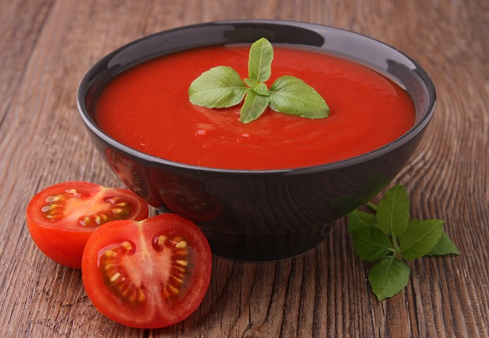

Classic Tomato Soup
A warming soup for cold days. Ready in 30 minutes

Ingredients
- Olive oil
- 1 onion, chopped
- 2 cloves garlic
- 800g canned tomatoes
- 500ml vegetable stock
- Salt and pepper
Steps
- Heat olive oil in a large pot.
- Add onion and cook for 5 minutes.
- Add garlic and cook for 1 more minute.
- Pour in tomatoes and stock.
- Simmer for 20 minutes.
- Blend until smooth.
- Season with salt and pepper and serve